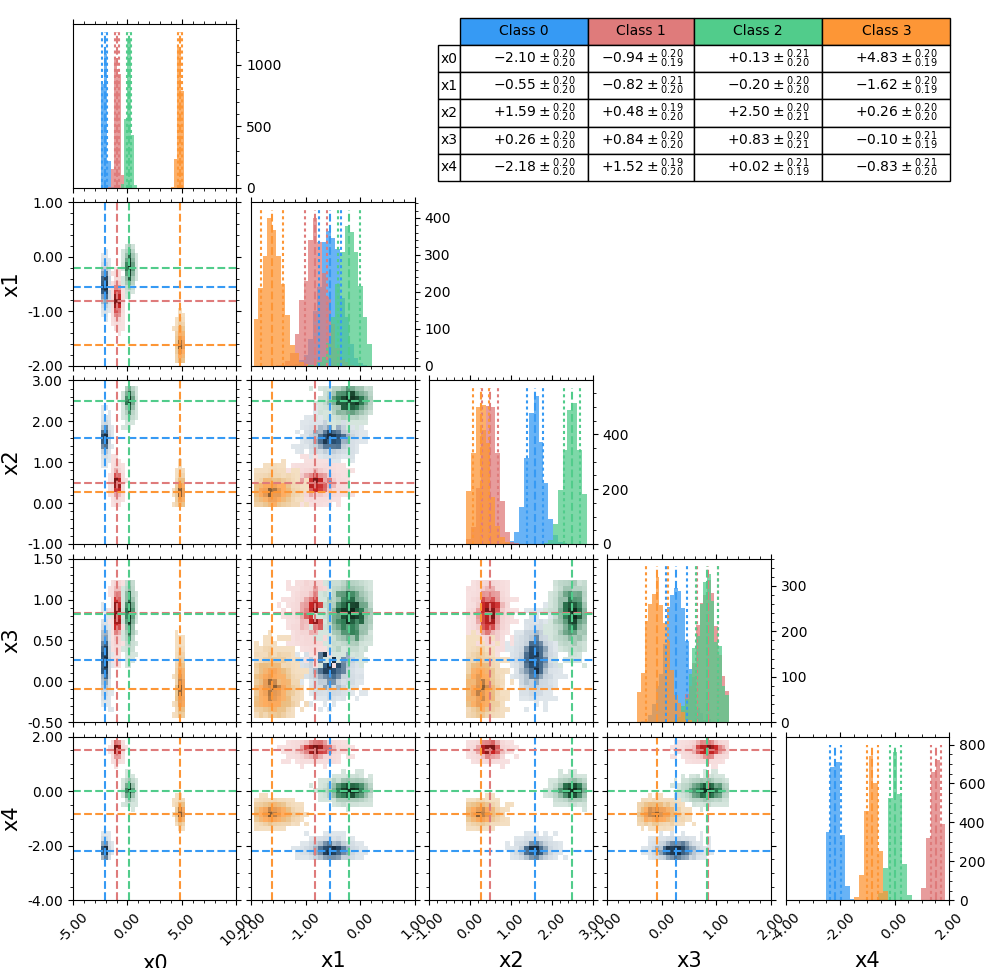

Contents
Star Clustering¶
Installation¶
Requirements¶
StarClustering has the following strict requirements:
- Python 2.* or 3.*
- Numpy
- Matplotlib
Introduction¶
Star Clustering is a python tool kit developed to apply K-means (MacQueen, 1967) clustering in astrophysics objects.
Cluster analysis aims to organize a collection of objects into classes based on a similarity criterion, such that objects in the same class are more alike than objects in different classes. There is a numerous set of cluster algorithms available in the literature (e.g. citealt{everitt92}), here we explore the aplication of K-means clustering.
K-means is a partitional hard clustering algorithm. It is one of the most popular clustering algorithms, mainly because it is easy to implement and its computational cost scales linearly with the number of objects to be classified. The fundamental steps in K-means are
(1) to choose the number of clusters K;
(2) define K initial cluster centres;
(3) assign each object in the sample to the closest cluster;
(4) recompute cluster centres as the centroid of the objects assigned to each cluster;
(5) repeat steps 3 and 4 until a convergence criterion is met. Usually the convergence criterion is either a decrease of the within-cluster variance under a threshold, or a minimal reassignation between two consecutive iterations. Here we adopt the criterion of having less than 1 per cent of reassignation between two consecutive iterations.
K-means clustering was previously applied in works like:
- Sánchez Almeida et al. (2016) - Search for Extremely Metal-poor Galaxies in the Sloan Digital Sky Survey (II): high electron temperature objects
- Ordovás-Pascual & Sánchez Almeida (2014) - A fast version of the k-means classification algorithm for astronomical applications
- Sánchez Almeida & Allende Prieto (2013) - Automated unsupervised classification of the Sloan Digital Sky Survey stellar spectra using k-means clustering
- Morales-Luis et al. (2011) - Systematic search for extremely metal poor galaxies in the Sloan Digital Sky Survey
- Sánchez Almeida et. al (2010) - Automatic Unsupervised Classification of All Sloan Digital Sky Survey Data Release 7 Galaxy Spectra
- Sánchez Almeida et. al (2009) - Search for Blue Compact Dwarf Galaxies During Quiescence. II. Metallicities of Gas and Stars, Ages, and Star Formation Rates
- Sánchez Almeida & Lites (2000) - Physical Properties of the Solar Magnetic Photosphere under the MISMA Hypothesis. II. Network and Internetwork Fields at the Disk Center
Get started¶
Simple gaussian distributions¶
Here we give a quick test to verify your StarClustering module is working well. In this example we use numpy to create 4 gaussian distributions in a 5 dimensional space, than we use K-means to find the clusters automaticly.
import numpy as np import matplotlib.pyplot as plt import StarClustering as sc seed = 97 def creat_random_clusters(n_sample, n_features, n_clusters, scale=0.2): np.random.seed(seed) mu = np.random.normal(0, 7*scale, size=(n_clusters, n_features)) labels = np.array([]) fullset = np.zeros((n_sample, n_features)) n_cut = int(n_sample/n_clusters) for k in range(n_clusters): fullset[(k)*n_cut:(k+1)*n_cut] = np.random.normal(mu[k], scale=scale, size=(n_cut,n_features)) labels = np.append(labels, np.full(n_cut, k)) return fullset, labels n_sample = 9000 n_features = 5 n_clusters = 4 fullset, labels_ref = creat_random_clusters(n_sample, n_features, n_clusters) RESULTS = sc.kmeans(fullset, n_clusters=3, RandState=seed) corner_compare.corner(fullset, np.unique(labels_0), RESULTS[0]) plt.show()As a result you should get the following plot:


{kind=link}